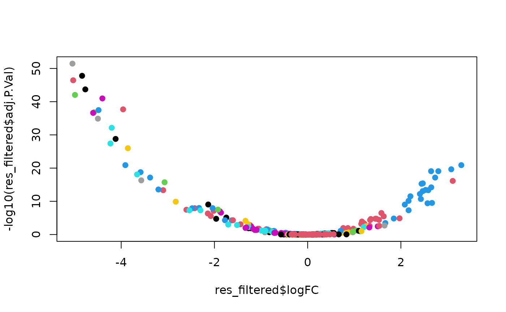

In this vignette we will go through the process of identifying cell-wise epigenetic potential genes using single cell dataset. We start with two exemplary, small single-cell datasets, i.e., scATAC-seq and scRNA-seq. Both these datasets are annotated with cell types.
Load data
In this vignette we assume that the user has single-cell datasets with cell-type annotations for both scRNA-seq and scATAC-seq. Another assumption here is that both datasets have some if not all cell types matching each other.
rna_data
#> An object of class Seurat
#> 37 features across 46500 samples within 1 assay
#> Active assay: RNA (37 features, 0 variable features)
#> 2 layers present: counts, data
atac_data
#> An object of class Seurat
#> 37 features across 82159 samples within 1 assay
#> Active assay: peaks (37 features, 0 variable features)
#> 2 layers present: counts, dataMain workflow
The main workhorse of the package is the
epigenetic_potential() function, which requires the
following data:
- A pair of count matrices from scATAC-seq and scRNA-seq in sparse format.
- A pair of vectors with cell type annotations for those matrices.
- A pair of vectors giving the samples contained in those matrices.
The function will then perform all preprocessing and analysis steps:
# not run
res <- epigenetic_potential(
rna_counts = rna_data@assays$RNA@counts,
rna_cell_types = rna_data@meta.data$cells_short,
rna_samples = rna_data@meta.data$orig.ident,
atac_counts = atac_data@assays$peaks@counts,
atac_cell_types = atac_data@meta.data$cell_type,
atac_samples = atac_data@meta.data$orig.ident
)Alternatively, if you want to fully control the individual steps of this function, you can implement the analysis workflow by using other functions provided by the package, which we will do below.
Create aggregate matrix from count matrix.
rna_mat_agg <- aggregate_count_matrix(
counts = rna_data@assays$RNA@counts,
cell_types = rna_data@meta.data$cells_short,
samples = rna_data@meta.data$orig.ident
)
atac_mat_agg <- aggregate_count_matrix(
counts = atac_data@assays$peaks@counts,
cell_types = atac_data@meta.data$cell_type,
samples = atac_data@meta.data$orig.ident
)Scale the rows of aggregate matrices so that they contains Z-scores.
rna_mat_z <- scale_rows(rna_mat_agg)
atac_mat_z <- scale_rows(atac_mat_agg)Annotate peaks in ATAC-seq data with genes.
atac_mat_z_anno <- annotate_atac_peaks(atac_mat_z)
#> >> Using Genome: ...
#> >> Using Genome: ...
#> >> Using Genome: ...Create a merged matrix containing both scRNA-seq and scATAC-seq data.
merged_mat <- merge_count_matrices(rna_mat_z, atac_mat_z_anno)Create a model frame for the model matrix.
sample_metadata <- create_model_frame(merged_mat)Create the model matrix.
model <- model.matrix(
~ 0 + cell / tech,
data = sample_metadata
)Run limma.
fit <-
merged_mat |>
lmFit(model) |>
eBayes()
#> Coefficients not estimable: cellairway_smooth_muscle:techATAC cellAT1_AT2_like:techATAC cellAT2_Club_like:techATAC cellbronchial_vessel:techATAC cellchondrocytes:techATAC celldendritic_cells:techATAC cellgoblet_cells:techATAC cellInterstitial_macrophages:techATAC cellmast_cells:techATAC cellmonocytes:techATAC cellPNECs:techATAC cellpulmonary_neuroendocrine:techATAC cellunclassified:techATAC cellvascular_smooth_muscle:techATAC cellveins:techATACParse limma results.
res <- parse_limma_results(fit)After these steps, res will contain the same data as if
we had run the epigenetic_potential() function.
Finally, results are shown as a volcano plot.
res_filtered <-
res |>
filter(!is.na(logFC))
plot(
res_filtered$logFC,
-log10(res_filtered$adj.P.Val),
pch = 19,
col = factor(res_filtered$cell)
)